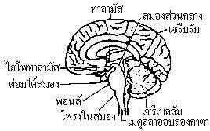
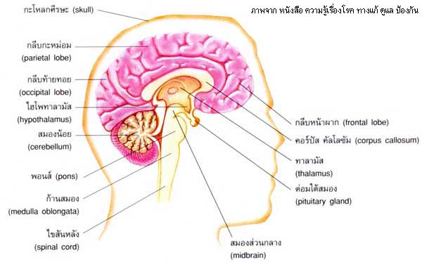
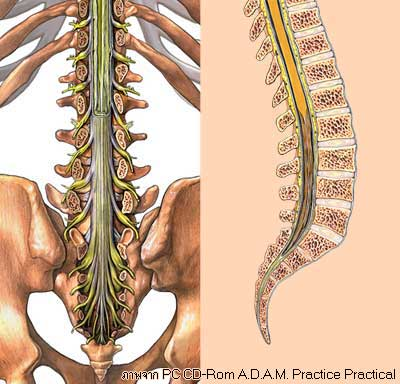
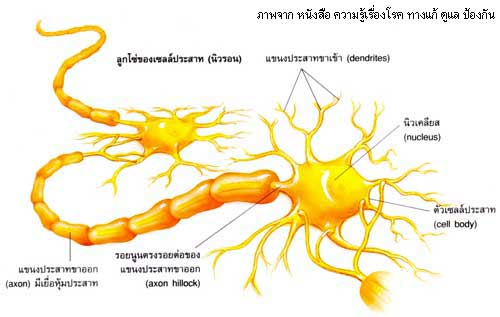

ระบบประสาทคืออะไร?
ระบบประสาท (Nervous System) เป็นศูนย์กลางที่ควบคุมการทำงานของร่างกาย ในการแสดงปฏิกิริยาตอบสนองต่อสิ่งเร้า โดยทำหน้าที่ประสานสัมพันธ์ระหว่างอวัยวะสัมผัสกับอวัยวะมอเตอร์ ควบคุมการทำงานของกล้ามเนื้อ การทำงานของต่อมและระบบต่าง ๆ ในร่างกาย อีกทั้งเป็นศูนย์ของความรู้สึกนึกคิดสติปัญญา การเรียนรู้ ความจำ ตลอดจนการปรับตัวให้เข้ากับสิ่งแวดล้อม
ระบบประสาทประกอบด้วย
-
1.สมอง (Brain)
เป็นอวัยวะที่ใหญ่ที่สุดในร่างกาย มีรูปร่างเป็นก้อนรูปไข่ประกอบด้วยเซลล์ประสาทมากมาย จำนวนประมาณพันล้านเซลล์อยู่ในกะโหลกศีรษะ เซลล์ประสาทในสมองแผ่กระจายกระแสไฟฟ้าอยู่ตลอดเวลา จากเซลล์หนึ่งไปยังอีกเซลล์หนึ่ง สมองมีน้ำหนักเพียง 2% ของร่างกาย ต้องทำหน้าที่ ป้องกันไม่ให้สมองได้รับความการออกซิเจนไปเลี้ยง 20% ของออกซิเจนที่สูดเข้าไปใช้ในร่างกาย สมองของเด็กแรกเกิดมีน้ำหนักประมาณ 300 – 400 กรัม แล้วเจริญเติบโตขึ้นเรื่อย ๆ จนถึงอายุ 15 ปี มนุษย์ถือได้ว่าเป็นสัตว์โลกที่มีสมองใหญ่และมีคุณภาพมากที่สุด มีน้ำหนักเฉลี่ยประมาณ 1,300 – 1,400 กรัม มีกะโหลกศีรษะ ซึ่งมีความหนาและแข็งแกร่ง กระทบกระเทือน
 สมองแบ่งเป็น 3 ส่วน คือ
- -สมองส่วนหน้า ได้แก่ ซีรีบรัม (Cerebrum) ไฮโพทาลามัส (hypothalamus) ทาลามัส (thalamus)
- -สมองส่วนกลาง
- -สมองส่วนท้าย ได้แก่ เซรีเบลลัม (Cerebellum) พอนส์ (pons) เมดุลลาออบลองกาตา (medulla oblongata)

สมองประกอบด้วยส่วนสำคัญ 8 ส่วนใหญ่ ๆ ได้แก่

-
1.ซีรีบรัม (Cerebrum)
เป็นส่วนของสมองที่อยู่บนสุดของศีรษะ มีรูปร่างเป็นพูย้อย ตั้งแต่หน้าผากไปตามรูปของกะโหลกศีรษะจนถึงบริเวณท้ายทอย มีขนาดใหญ่ที่สุดประมาณ 80% ของสมองทั้งหมด บริเวณเปลือกนอกจะมีลักษณะเป็นรอยหยัก ยับย่นจีบ เป็นร่องลึก เรียกว่า คอร์เทกซ์ (Cortex) ซึ่งจัดว่าเป็นบริเวณที่สำคัญมาก ทั้งนี้เนื่องจากพบว่าคนที่มีความฉลาดมากและอัจฉริยะมักจะมีคอร์เทกซ์หรือรอยหยักส่วนนี้มากกว่าปกติ เนื่องจากจะทำให้มีพื้นที่ในการใช้งานของสมองมากตามไปด้วย
สมองเป็นส่วนที่มีความสำคัญมากที่สุด เนื่องจากเป็นศูนย์กลางในการควบคุมพฤติกรรมการเรียนรู้ ความจำ การวิเคราะห์ การใช้เหตุผล เป็นต้น ในส่วนของสมองแบ่งออกได้อีก 4 ส่วนย่อย ซึ่งในแต่ละส่วนจะมีหน้าที่การทำงานแตกต่างกัน ดังนี้
- -พูสมองส่วนหน้า (frontal lobe) ในบริเวณนี้จะแบ่งออกได้อีก 2 ซีก คือ ซีกซ้าย (left themisphere) และซีกขวา (right themisphere) โดยมีหน้าที่ควบคุมการเคลื่อนไหวของอวัยวะต่าง ๆ ทั่วร่างกาย แต่การสั่งงานจะกลับด้านกัน คือสมองซีกซ้ายจะควบคุมการทำงานของอวัยวะด้านขวาของร่างกาย ส่วนสมองซีกขวาจะควบคุมการทำงานของอวัยวะด้านซ้ายของร่างกาย นอกจากนี้ยังเป็นศูนย์กลางของอารมณ์ การพูด ความคิด การจำ การเรียนรู้ และการใช้ภาษาอีกด้วย
- -พูสมองส่วนกลาง (Parietal lobe) เป็นสมองส่วนที่ทำหน้าที่รับความรู้สึกต่าง ๆ ทั่วไปของร่างกาย เช่น ร้อน หนาว เจ็บปวด เป็นต้น หรือเรียกส่วนนี้อีกอย่างหนึ่งว่าเขตรับสัมผัส
- -พูสมองส่วนข้าง (temporal lobe) เป็นส่วนที่อยู่บริเวณด้านข้างของสมองตรงขมับ มีหน้าที่เป็นศูนย์กลางในการรับรู้ในด้านรส กลิ่น เสียง และความเข้าใจด้านภาษา หรืออาจเรียกส่วนนี้อีกอย่างหนึ่งว่าเขตการฟัง
- -พูสมองส่วนหลัง (occipital lobe) เป็นบริเวณที่อยู่ท้ายสุดของสมองตรงท้ายทอย มีหน้าที่ควบคุมการรับรู้ทางสายตาให้เกิดการมองเห็นภาพต่าง ๆ ทั้งแนวตั้งและแนวนอน หรืออาจเรียกบริเวณส่วนนี้ว่า เขตการเห็น
-
2. สมองเล็ก (cerebellum)
เป็นสมองส่วนที่อยู่บริเวณท้ายทอยใต้สมองแท้ลงมา รูปร่างเหมือนใบไม้มีลักษณะเป็นรอยหยักย่นเช่นกันแต่น้อยกว่าสมองแท้ ชั้นนอกเป็นสีเทา (gray matter) ส่วนชั้นในเป็นสีขาว (white matter) มีหน้าที่สำคัญคือช่วยให้อวัยวะต่าง ๆ ที่อยู่ภายใต้การควบคุมของสมองสามารถทำงานประสานกันได้เป็นจังหวะเดียวกันเพื่อทำกิจกรรมใดกิจกรรมหนึ่ง เช่น การเล่นเทนนิสจะตีลูกให้ถูกได้ อวัยวะหลายส่วนจะต้องทำงานประสานเป็นอันหนึ่งอันเดียวกัน เช่น ตา หู แขน ขา มือ ฯลฯ หน้าที่อีกประการหนึ่งคือควบคุมการทรงตัวของร่างกาย เนื่องจากสมองเล็กเป็นตัวรับกระแสประสาทจากอวัยวะรับสัมผัสที่ใช้ควบคุมการทรงตัวซึ่งอยู่บริเวณหูชั้นใน ทำให้เกิดความสมดุลในขณะที่ร่างกายกำลังอยู่ในอิริยาบถต่าง ๆ เช่น ขณะยืน เดิน หมุนตัว กระโดด เป็นต้น นอกจากนี้ยังควบคุมการเกร็งตัวของร่างกายอีกด้วย
-
3.ทาลามัส (thalamus)
เป็นส่วนที่อยู่ต่อจากสมองซีรีบรัมลงมา ทำหน้าที่เป็นศูนย์รับกระแสประสาทความรู้สึกที่ถูกส่งมาจากอวัยวะต่าง ๆ ของร่างกายเข้าสู่ไขสันหลัง ผ่านก้านสมอง (medulla oblongata) พอนส์ และสมองส่วนกลาง (midbrain) ตามลำดับ จนถึงทาลามัส จากนั้นทาลามัสจะจัดการแยกกระแสประสาทเหล่านั้นเพื่อเข้าสู่สมองเขตต่าง ๆ อีกทอดหนึ่ง และเมื่อสมองสั่งการเช่นใด ทาลามัสจะรับคำสั่งนั้นส่งเข้าสู่สมองส่วนกลาง พอนส์ ก้านสมอง และสู่ไขสันหลัง เพื่อส่งคำสั่งนั้นให้ไปมีผลต่ออวัยวะต่าง ๆ ของร่างกาย เท่ากับว่าทาลามัสเป็นสถานีสุดท้ายในการจ่ายกระแสประสาทให้กับสมอง และเป็นสถานีแรกที่รับคำสั่งจากสมองเพื่อจ่ายไปสู่อวัยวะต่าง ๆ นอกจากนี้ทาลามัสยังทำหน้าที่ควบคุมอารมณ์และพฤติกรรมของเด็กแรกเกิดในขณะที่สมองซีรีบรัมยังทำงานได้ไม่เต็มที่อีกด้วย
-
4.ไฮโปทาลามัส (hypothalamus)
อยู่ใต้ทาลามัสลงมาใกล้กับต่อมไร้ท่อพิทูอิทารี (pituitary gland) ไฮโปทาลามัสถือว่าเป็นส่วนประกอบสำคัญ และมีหน้าที่สำคัญในการสร้างความสมดุลให้กับระบบการทำงานของร่างกาย เช่น ควบคุมการทำงานของต่อมพิทูอิทารี รักษาระดับความสมดุลของอุณหภูมิร่างกาย การหายใจ การหลับ การตื่น อัตราการเต้นของหัวใจ ความดันโลหิต ปริมาณน้ำตาลในกระแสเลือด ควบคุมความสมดุลในการทำงานของระบบประสาทอัตโนมัติ นอกจากนี้ยังทำหน้าที่ควบคุมแรงขับ (drive) ต่าง ๆ เช่น ความหิว ความกระหายความต้องการทางเพศ เป็นต้น
ความสำคัญของไฮโปทาลามัสนี้เองบางครั้งจึงได้รับสมญาว่าผู้พิทักษ์ร่างกาย
-
5.สมองส่วนกลาง (midbrain)
เป็นส่วนที่มีความยาวประมาณ 1 นิ้ว ตั้งอยู่ใต้ทาลามัส โดยมีเซลล์ประสาทเป็นตัวเชื่อมต่อกัน
-
6.พอนส์ (pons)
เป็นส่วนที่อยู่ถัดลงมาจากสมองส่วนกลาง ด้านขวาของพอนส์จะอยู่ติดกับสมองเล็ก (cerebellum) โดยมีใยประสาทเป็นตัวเชื่อม จึงทำให้พอนส์เป็นทางผ่านของกระแสประสาทที่มาจากส่วนล่างเข้าสู่สมอง
-
7.ก้านสมอง (medulla oblongata)
เป็นส่วนที่อยู่ต่อจากพอนส์ลงมา และเป็นส่วนสุดท้ายของสมอง โดยก้านสมองจะทำหน้าที่เชื่อมต่อระหว่างสมองกับไขสันหลัง ภายในก้านสมองประกอบด้วยเส้นประสาทเป็นมัด เพื่อส่งกระแสประสาทที่ได้รับจากสมองผ่านส่วนต่าง ๆ ลงมาตามลำดับเพื่อส่งเข้าสู่ไขสันหลังและรับกระแสประสาทที่ส่งขึ้นมาจากไขสันหลังส่งต่อไปสู่ส่วนต่าง ๆ ของสมองตามลำดับเช่นกัน เท่ากับว่าก้านสมองเป็นสถานีรับส่งกระแสประสาทสุดท้ายที่เชื่อมต่อระหว่างสมองกับไขสันหลัง แต่เนื่องจากมัดของเส้นประสาทที่อยู่ภายในก้านสมองนั้นมีลักษณะไขว้กันเป็นรูปกากบาท จึงทำให้เส้นประสาทชุดที่มาจากร่างกายซีกขวาจะไปเชื่อมต่อกับเส้นประสาทที่จะเข้าสู่สมองซีกซ้าย และเส้นประสาทชุดที่มาจากร่างกายซีกซ้ายจะไปเชื่อมต่อกับเส้นประสาทที่จะเข้าสู่สมองซีกขวา จึงมีผลทำให้สมองซีกขวาควบคุมการทำงานของอวัยวะซีกซ้ายและสมองซีกซ้ายจึงควบคุมการทำงานของอวัยวะซีกขวา นอกจากนี้ก้านสมองยังทำหน้าที่ควบคุมการทำงานของอวัยวะภายในบางชนิดอีกด้วย เช่น การเต้นของหัวใจ การขยายและหดตัวของปอด การย่อยอาหาร การยืดและหดตัวของเส้นเลือด เป็นต้น
-
8.เยื่อหุ้มสมอง
-เยื่อหุ้มสมองชั้นนอก (Dura mater) เหนียว แข็งแรงมากโดยมีหน้าที่ป้องกันการกระทบกระเทือน
-เยื่อหุ้มสมองชั้นกลาง (Arachoid mater) เป็นเยื่อบางๆ
-เยื่อหุ้มสมองชั้นใน (Pia mater) มีเส้นเลือดแทรกมากมายทำหน้าที่ส่งอาหารไปเลี้ยงสมอง ในระหว่างชั้นกลางกับชั้นในจะมีการบรรจุของเหลวที่เรียกว่า น้ำเลี้ยงสมองไขสันหลัง โดยจะทำหน้าที่ให้สมองและไขสันหลังเปียกชื้นอยู่เสมอ
-
2.ไขสันหลัง
โครงสร้างของไขสันหลังและเส้นประสาทไขสันหลัง
- 1.ปีกบน (dorsal horn) เป็นบริเวณรับความรู้สึก
- 2.ปีกล่าง (ventral horn) เป็นบริเวณนำคำสั่ง
- 3.ปีกข้าง (lateral horn) เป็นบริเวณระบบประสาทอัตโนมัติ

-
3.เส้นประสาท (Nerve Fiber)
เป็นกลุ่มของเส้นใยบาง ๆ จำนวนมากซึ่งเกิดจากเซลล์ประสาทหลายตัว รวมกันเข้าเป็นมัด เส้นประสาทอาจเป็นมัดของแอกซอน หรือมัดของเดนไดรท์ หรือทั้งสองชนิดรวมกันก็ได้
เส้นประสาทในร่างกายสามารถจำแนก ได้เป็น 2 ประเภทใหญ่ ๆ ดังนี้
1.เส้นประสาทที่ออกจากสมอง เส้นประสาทประเภทนี้ มีทั้งสิ้น 12 คู่มีศูนย์กลางอยู่ที่สมอง บางคู่จะเป็นเส้นประสาทที่เกี่ยวกับการสัมผัส บางคู่จะเป็นเส้นประสาทที่ใช้ควบคุมการเคลื่อนไหวแยกเป็นทางซีกซ้ายและซีกขวา เพื่อรับส่งความรู้สึกและคำสั่งตั้งแต่ลำคอขึ้นไป
2.เส้นประสาทที่ออกจากไขสันหลัง เป็นเส้นประสาทที่แยกออกมาจากบริเวณไขสันหลัง จากกึ่งกลางลำตัวแยกกระจายออกไปทางซีกซ้ายขวาของร่างกาย เรียกว่าเส้นประสาทที่ออกจากไขสันหลัง (spinal nerve) ทำหน้าที่รับส่งความรู้สึกและคำสั่งตั้งแต่บริเวณลำคอลงไปตลอดทั้งร่างกายจนถึงปลายเท้า มีหน้าที่รับความรู้สึกและควบคุมการเคลื่อนไหวมีทั้งสิ้น 31 คู่ โดยจะแยกเป็น 2 ชุด ชุดที่ 1 เป็นเส้นประสาทส่วนของการรับความรู้สึก เข้าสู่ไขสันหลังทางด้านหลัง ส่วนอีกชุดหนึ่งทำหน้าที่ควบคุมการเคลื่อนไหว เข้าสู่ไขสันหลังบริเวณช่วงท้อง
เส้นประสาทแต่ละเส้นจะมีเซลล์ประสาท (Neuron) หลาย ๆ เซลล์เรียงต่อกัน เซลล์ประสาทกระจายไปเลี้ยงทั้งร่างกาย มีประมาณ 12,000 ล้านเซลล์ ในไขสันหลังและสมองมีเซลล์ประสาทมากที่สุด

-
4.เซลล์ประสาท (neuron)
เซลล์ประสาทเป็นส่วนที่เล็กที่สุดของระบบประสาท เซลส์ประสาทหนึ่งเซลล์ มีส่วนประกอบที่สำคัญ ดังนี้
1.ตัวเซลส์ (Cell body) เป็นจุดศูนย์กลางของเซลล์ประสาท ประกอบด้วย นิวเคลียส (nucleus) อยู่ตรงกลางเซลล์ ล้อมรอบด้วยของเหลวที่เรียกว่า ไซโตพลาส (cytoplast) มีผนังเซลล์ (cellmembrane) ทำหน้าที่เป็นผนังห่อหุ้มเซลล์
2.เดนไดรท์ (dendrite) เป็นเส้นใยที่ยื่นออกจากตัวเซลล์มีหน้าที่รับความรู้สึกมีกิ่งก้านสาขาเป็นแขนงสั้น ๆ มีลักษณะคล้ายรากแขนงของต้นไม้
3.แอกซอน (axon) เป็นเส้นใยเดี่ยว ๆ ที่ยื่นออกจากตัวเซลล์ ทำหน้าที่ส่งความรู้สึกของเซลล์นั้นไปยังเซลล์ประสาทตัวอื่น ๆ แอกซอนมีเปลือกหุ้มเรียกว่า ไมอิลินชีท (myelin sheath) ปลายสุดของแอกซอนเป็นพุ่มต่อกับอวัยวะเรียกเอนด์บลาส (end brust) ใยแอกซอนจะมีความยาวมากเป็นพิเศษ แต่ละเซลล์จะมีเพียงเส้นเดียวเท่านั้น ปลายแขนงย่อยของแอกซอน ทุกแขนงจะมีตุ่มเล็ก ๆ เรียกว่าตุ่มปลายประสาท (terminal buttons) การทำงานของแอกซอนจะเกิดขึ้น เมื่อตัวเซลล์ได้รับกระแสประสาทความรู้สึกจากเดนไดรท์จากนั้นจะส่งกระแสความรู้สึกนั้นไปยังแอกซอน แล้วแอกซอนจะส่งกระแสประสาทความรู้สึกนั้น ต่อไปยังเซลล์ประสาทตัวอื่น ๆ หรือส่งไปยังอวัยวะต่าง ๆ ที่ต้องการให้เกิดความรู้สึก หรือแสดงปฏิกิริยาตอบสนอง
เซลล์ประสาทในร่างกายอาจแบ่งหน้าที่การทำงานได้ 3 ประเภท ดังนี้
3.1เซลล์ประสาทรับความรู้สึก ทำหน้าที่รับกระแสประสาทจากอวัยวะรับสัมผัส เข้าสู่สมองและไขสันหลัง
3.2เซลล์ประสาทมอเตอร์ ทำหน้าที่นำกระแสประสาทเข้าสู่กล้ามเนื้อทำให้เกิดการเคลื่อนไหว
3.3เซลล์ประสาทเชื่อมโยง เป็นเซลล์ประสาทที่เชื่อมอยู่ระหว่างเซลล์ประสาทรับความรู้สึกและเซลล์ประสาทมอเตอร์
4.ซิแนปส์ (Synaps) เป็นจุดต่อระหว่างใยแอกซอนของเซลล์ประสาทตัวหนึ่งกับเดนไดรท์ของเซลล์ประสาทอีกตัวหนึ่ง โดยที่เมื่อเซลล์ประสาทตัวหนึ่งส่งกระแสประสาทความรู้สึกเข้าสู่ แอกซอนจนถึงปลายตุ่มประสาทแล้ว กระแสความรู้สึกนั้นจะถูกส่งเข้าสู่บริเวณซิแนปส์ จากนั้นซิแนปส์จะรับกระแสประสาทและส่งต่อไปยังเดนไดรท์ เพื่อเข้าสู่เซลล์ประสาทอีกตัวหนึ่งทันที ซิแนปส์จึงทำหน้าที่เป็นตัวเชื่อมสัญญาณกระแสประสาทระหว่างเซลล์ประสาทตัวหนึ่งกับเซลล์ประสาทอีกตัวหนึ่งนั่นเอง
- 1.ระบบประสาทส่วนกลาง (central nervoussystem หรือ CNS) ประกอบด้วยสมองและไขสันหลัง
- 2.ระบบประสาทส่วนปลาย หรือระบบประสาทรอบนอก ( peripheral nervous system หรือ PNS) ประกอบด้วยเส้นประสาทสมอง (cranial nerve) และเส้นประสาทไขสันหลัง (spinal nerve) และระบบประสาทอัตโนมัติ (autonomic nervous system หรือ ANS)